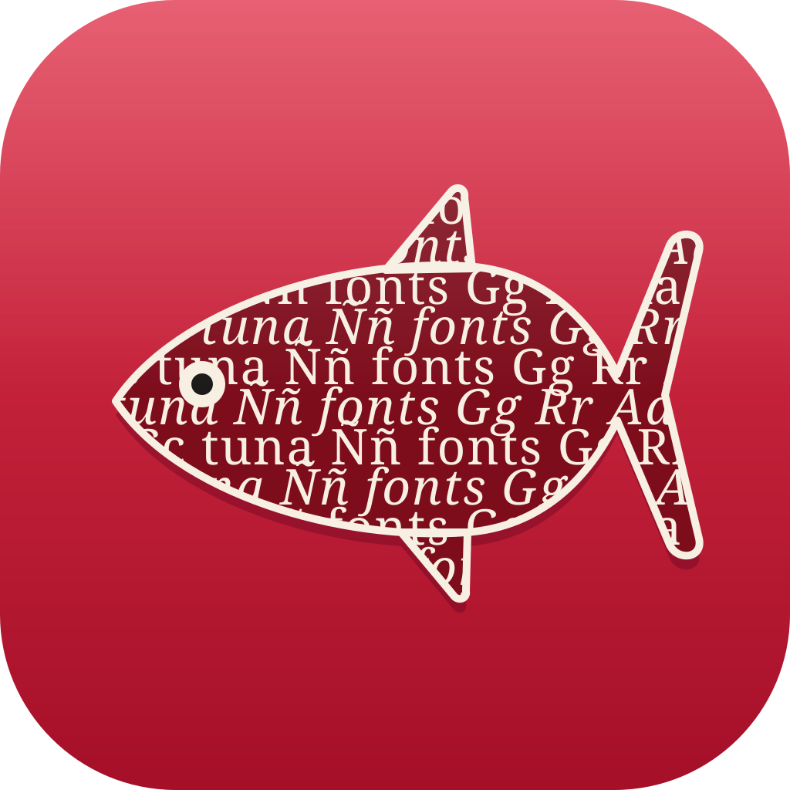

<!doctype html>
<html>
<head>
<meta charset="utf-8">
<title>tuna-fonts en la bandeja</title>
<!-- GIF del README: el icono en la bandeja, clic derecho, el menú y «search for a font».
     render(t) pinta el fotograma del segundo t; se graba con un script de Puppeteer. -->
<style>
  @font-face { font-family: Archivo; font-weight: 500; src: url(../node_modules/@fontsource/archivo/files/archivo-latin-500-normal.woff2); }
  @font-face { font-family: Archivo; font-weight: 600; src: url(../node_modules/@fontsource/archivo/files/archivo-latin-600-normal.woff2); }
  @font-face { font-family: Mano; src: url(../node_modules/@fontsource/gochi-hand/files/gochi-hand-latin-400-normal.woff2); }
  html, body { margin: 0; }
  #e { position: relative; width: 760px; height: 420px; overflow: hidden; font-family: Archivo, "Segoe UI", sans-serif;
       background: radial-gradient(120% 140% at 20% 0%, #3c4f63 0%, #26323f 45%, #1b232c 100%); }
  /* barra de tareas de Windows 11, solo la esquina de la derecha */
  .barra { position: absolute; left: 0; right: 0; bottom: 0; height: 48px; background: rgba(32, 32, 34, 0.92); border-top: 1px solid rgba(255,255,255,.06);
           display: flex; align-items: center; justify-content: flex-end; gap: 4px; padding-right: 10px; color: #fff; }
  .ico { width: 36px; height: 38px; border-radius: 5px; display: grid; place-items: center; }
  .ico.hover { background: rgba(255,255,255,.08); }
  .ico svg, .ico img { display: block; }
  .reloj { text-align: right; font: 400 12px "Segoe UI", Archivo, sans-serif; line-height: 1.35; padding: 0 8px 0 6px; }
  .tip { position: absolute; padding: 5px 9px; border-radius: 6px; background: #2c2c2e; color: #fff; font: 400 12px "Segoe UI", Archivo, sans-serif;
         box-shadow: 0 4px 12px rgba(0,0,0,.35); border: 1px solid rgba(255,255,255,.08); white-space: nowrap; }
  /* el menú: copia de src/Menu.svelte (tema claro) */
  .menu { position: absolute; width: 248px; padding: 5px; background: #f7f6f3; color: #1b1a19; border-radius: 12px; border: 1px solid #d9d6d0; transform-origin: bottom right; }
  .cabeza { display: flex; align-items: center; gap: 10px; padding: 8px 9px 7px; }
  .marca { font-family: Mano; font-size: 17px; line-height: 1; }
  .marca i { font-style: normal; color: #c8102e; }
  .estado { display: flex; align-items: center; gap: 6px; font-size: 11.5px; color: rgba(27,26,25,.42); margin-top: 3px; }
  .punto { width: 6px; height: 6px; border-radius: 50%; background: #2f7a4c; }
  .sep { height: 1px; margin: 4px 6px; background: rgba(27,26,25,.08); }
  .item { display: flex; align-items: center; gap: 10px; height: 32px; padding: 0 10px; border-radius: 8px; font-size: 13px; font-weight: 500; }
  .item svg { color: rgba(27,26,25,.42); }
  .item.on { background: rgba(27,26,25,.06); }
  .item.on svg { color: #1b1a19; }
  .item.salir { color: rgba(27,26,25,.62); }
  .cursor { position: absolute; width: 20px; height: 28px; pointer-events: none; }
  .onda { position: absolute; border-radius: 50%; border: 2px solid rgba(255,255,255,.7); }
</style>
</head>
<body>
<div id="e"></div>
<script>
const DUR = 6.4;
const ease = (x) => (x < 0 ? 0 : x > 1 ? 1 : x < 0.5 ? 2 * x * x : 1 - Math.pow(-2 * x + 2, 2) / 2);
const lerp = (a, b, u) => a + (b - a) * u;
const fase = (t, a, b) => ease((t - a) / (b - a));

const svg = (paths, size = 15, color = "currentColor", w = 1.9) =>
  `<svg width="${size}" height="${size}" viewBox="0 0 24 24" fill="none" stroke="${color}" stroke-width="${w}" stroke-linecap="round" stroke-linejoin="round">${paths}</svg>`;
const I = {
  abrir: '<rect x="2" y="4" width="20" height="16" rx="2"/><path d="M10 4v4"/><path d="M2 8h20"/><path d="M6 4v4"/>',
  buscar: '<circle cx="11" cy="11" r="8"/><path d="m21 21-4.3-4.3"/>',
  descubrir: '<circle cx="12" cy="12" r="10"/><polygon points="16.24 7.76 14.12 14.12 7.76 16.24 9.88 9.88 16.24 7.76"/>',
  ajustes: '<line x1="21" x2="14" y1="4" y2="4"/><line x1="10" x2="3" y1="4" y2="4"/><line x1="21" x2="12" y1="12" y2="12"/><line x1="8" x2="3" y1="12" y2="12"/><line x1="21" x2="16" y1="20" y2="20"/><line x1="12" x2="3" y1="20" y2="20"/><line x1="14" x2="14" y1="2" y2="6"/><line x1="8" x2="8" y1="10" y2="14"/><line x1="16" x2="16" y1="18" y2="22"/>',
  salir: '<path d="M12 2v10"/><path d="M18.4 6.6a9 9 0 1 1-12.77.04"/>',
  flecha: '<path d="m18 15-6-6-6 6"/>',
  wifi: '<path d="M12 20h.01"/><path d="M2 8.82a15 15 0 0 1 20 0"/><path d="M5 12.86a10 10 0 0 1 14 0"/><path d="M8.5 16.43a5 5 0 0 1 7 0"/>',
  sonido: '<path d="M11 4.7a.7.7 0 0 0-1.2-.5L6.4 7.6A1.4 1.4 0 0 1 5.4 8H3a1 1 0 0 0-1 1v6a1 1 0 0 0 1 1h2.4a1.4 1.4 0 0 1 1 .4l3.4 3.4a.7.7 0 0 0 1.2-.5z"/><path d="M16 9a5 5 0 0 1 0 6"/><path d="M19.4 18.4a9 9 0 0 0 0-12.7"/>',
};
const CURSOR = "data:image/svg+xml," + encodeURIComponent('<svg xmlns="http://www.w3.org/2000/svg" width="20" height="28" viewBox="0 0 20 28"><path d="M1 1 L1 22 L6.5 16.8 L10.2 25.5 L13.4 24.1 L9.8 15.6 L17 15.6 Z" fill="#fff" stroke="#000" stroke-width="1.4" stroke-linejoin="round"/></svg>');
const ITEMS = [["abrir", "open tuna-fonts"], ["buscar", "search for a font"], ["descubrir", "discover fonts"], ["ajustes", "settings"]];

// Posiciones: el icono de tuna-fonts en la bandeja y el menú, con su esquina abajo a la derecha en el cursor.
const ICO = { x: 548, y: 396 };
function render(t) {
  // guion
  const vaIcono = fase(t, 0.3, 1.2);
  const tip = t > 1.3 && t < 1.9;
  const clic = t >= 1.9 ? 1 : 0;
  const menuAbierto = t >= 2.0 && t < 5.25;
  const entra = fase(t, 2.0, 2.18);
  // recorrido del cursor dentro del menú: abrir → buscar (y clic)
  const mx = 548 - 248 + 6, my = 396 - 268; // esquina superior izquierda del menú
  const fila = (i) => my + 70 + i * 32 + 16;
  let cx, cy;
  if (t < 1.9) { cx = lerp(250, ICO.x, vaIcono); cy = lerp(160, ICO.y, vaIcono); }
  else if (t < 2.4) { cx = ICO.x; cy = ICO.y; }
  else if (t < 3.2) { const u = fase(t, 2.4, 3.2); cx = lerp(ICO.x, mx + 120, u); cy = lerp(ICO.y, fila(3), u); }
  else if (t < 3.8) { const u = fase(t, 3.2, 3.8); cx = mx + 120; cy = lerp(fila(3), fila(2), u); }
  else if (t < 4.4) { const u = fase(t, 3.8, 4.4); cx = mx + 120; cy = lerp(fila(2), fila(1), u); }
  else { cx = mx + 120; cy = fila(1); }
  let hover = -1;
  if (menuAbierto) for (let i = 0; i < 4; i++) if (cx > mx && cx < mx + 248 && Math.abs(cy - fila(i)) < 16) hover = i;
  const clicMenu = t >= 4.9 && t < 5.25;

  let h = "";
  // la barra de tareas
  h += `<div class="barra">
    <div class="ico">${svg(I.flecha, 16, "#fff", 2)}</div>
    <div class="ico ${t > 1.15 && t < 2.0 ? "hover" : ""}"></div>
    <div class="ico">${svg(I.wifi, 16, "#fff", 2)}</div>
    <div class="ico">${svg(I.sonido, 16, "#fff", 2)}</div>
    <div class="reloj">10:24<br>15/11/2026</div>
  </div>`;
  if (tip) h += `<div class="tip" style="left:${ICO.x - 34}px;top:${ICO.y - 50}px">tuna-fonts</div>`;
  if (menuAbierto) {
    const op = clicMenu ? 1 - fase(t, 5.05, 5.25) : entra;
    h += `<div class="menu" style="left:${mx}px;top:${my}px;opacity:${op.toFixed(3)}${entra < 1 ? `;transform:translateY(${(1 - entra) * 6}px) scale(${(0.98 + 0.02 * entra).toFixed(4)})` : ""}">
      <div class="cabeza"><div><div class="marca">tuna-fonts<i>.</i></div><div class="estado"><span class="punto"></span>2 watched folders active</div></div></div>
      <div class="sep"></div>
      ${ITEMS.map(([k, txt], i) => `<div class="item ${hover === i ? "on" : ""}">${svg(I[k])}${txt}</div>`).join("")}
      <div class="sep"></div>
      <div class="item salir">${svg(I.salir)}quit</div>
    </div>`;
  }
  // ondas de los clics
  const onda = (x, y, t0) => {
    const u = (t - t0) / 0.35;
    if (u < 0 || u > 1) return "";
    const r = 6 + u * 16;
    return `<div class="onda" style="left:${x - r}px;top:${y - r}px;width:${r * 2}px;height:${r * 2}px;opacity:${(1 - u).toFixed(2)}"></div>`;
  };
  h += onda(ICO.x, ICO.y, 1.9) + onda(mx + 120, fila(1), 4.9);
  // el cursor de Windows
  h += ``;
  document.getElementById("e").innerHTML = h;
}
window.render = render;
window.PERIODO = DUR;
render(0);
</script>
</body>
</html>
